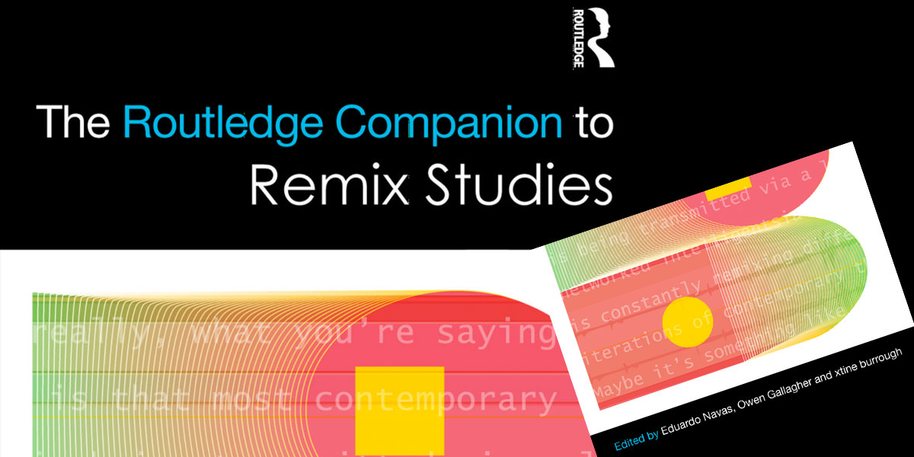
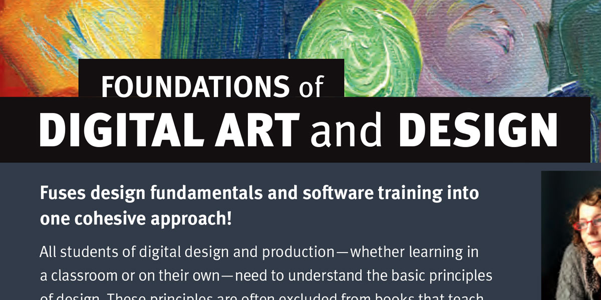
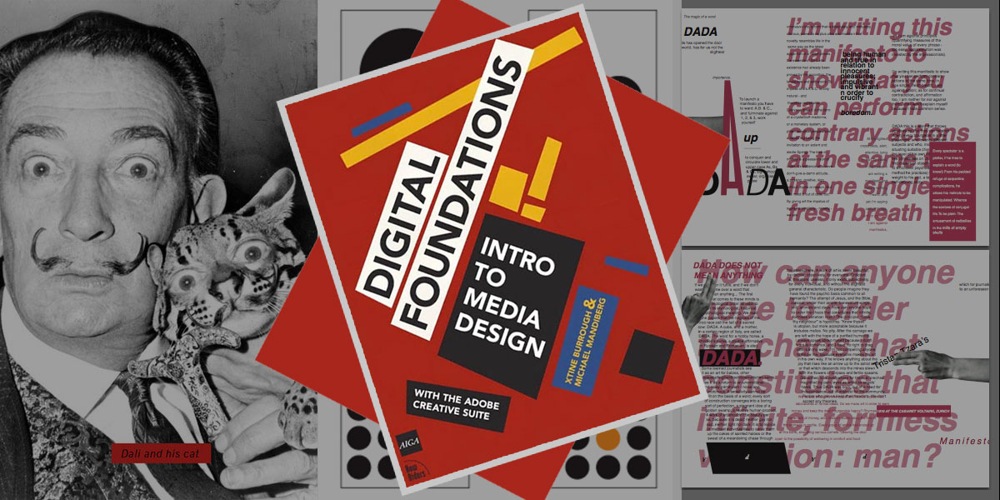

- 

- 

- 
Books, Chapters, Articles
The Routledge Handbook of Remix Studies and Digital Humanities Edited by Eduardo Navas, Owen Gallagher, and xtine burrough, 2021
Foundations of Digital Art and Design with Adobe Creative Cloud, 2nd Edition by xtine burrough, 2019
Keywords in Remix Studies edited by Eduardo Navas, Owen Gallagher, and xtine burrough, 2017
The Routledge Companion to Remix Studies edited by Eduardo Navas, Owen Gallagher, and xtine burrough, 2014
Foundations of Digital Art and Design with Adobe Creative Cloud by xtine burrough, 2013
Net Works: Case Studies of Web Art and Design edited by xtine burrough, 2011
Visual Communication on the Web by xtine burrough and paul martin lester, 2012
Digital Foundations: Intro to Media Design with Adobe Creative Suiteby xtine burrough and Michael Mandiberg, 2008
burrough, xtine. “Poetically Remixing the Archive” In The Routledge Handbook of Remix Studies and Digital Humanities edited by Eduardo Navas, Owen Gallagher, and xtine burrough, 2021.
burrough, xtine ‹ ›Lucy HG Solomon. “Drawing on Theory to Build_Unbuild Media, or Lalalalalalalalala.” In The Critical Makers Reader: (un)Learning Technology. INC Reader #12 edited by Loes Bogerz and Litizia Chiapinni, 61-72. Amsterdam, NL: Institute of Networked Cultures, Amsterdam University of Applied Sciences, 2020.
“Creativity” (burrough and Dufour) In Keywords in Remix Studies edited by Eduardo Navas, Owen Gallagher, and xtine burrough.
“Delocator.net: Using the Web to Organize and Promote Alternative Behaviors.” In Culture Jamming: Activism and the Art of Cultural Resistance edited by Marilyn DeLaure and Moritz Fink, NYU Press, 2017.
“Going Crazy with Remix: A Classroom Study by Practice via Lenz v. Universal.” (burrough and Erickson) in The Routledge Companion to Remix Studies, edited by Eduardo Navas, Owen Gallagher, and xtine burrough, Routledge, 2015
“Mechanical Olympics.” In Net Works: Case Studies of Web Art and Design, edited by xtine burrough, Routledge, 2011, pp. 55-65.
burrough, xtine. “Syntonic Refuge: performing LabSynthE.” International Journal of Performance Arts and Digital Media. (Vol. 17, No. 2, 2021): 284-296.
LabSynthE (burrough, Dufour, et al.). (RE)Call Your Desire.” (RE)Verb. Issue 1, Fall 2021.
burrough, xtine. “Six Feet Apart or Under: Throw The Die Together.” Taper #6: A Throw of the Dice.
burrough, xtine and Sabrina Starnaman. “Epic Hand Washing: Synchronous Participation and Lost Narratives” M/C Journal: Zoom. 24(3), June 2021.
burrough, xtine and Sabrina Starnaman. “Recovering Lost Narratives in Epic Kitchens” Unthinking Photography. May 2020.
burrough, xtine. “A Decade of Working with the Working Crowd.” Media-N: Journal of the New Media Caucus. Special Issue, “Humans Are Underrated: Art & Labor in the Amazon Economy,” edited by Johanna Gosse and Carrie Edinger. (Vol. 16, No. 1., 2020): 116-140.
burrough, xtine and Letícia Ferreira. “Contested Spaces: How We Made an Audio Quilt of One Thousand Names.” Trace: A Journal of Writing, Media, and Ecology. Special Issue, “How We Make: Theory, Praxis, Pedagogy,” edited by Emily Brooks and Shannon Butts. Issue 3, September 2019.
burrough, xtine and Sabrina Starnaman. “A Digital Korl Woman: Students and Workers Recover the Spirit of Life in the Iron Mills from the Digital Factory to the Classroom.” Transformations: The Journal of Inclusive Scholarship and Pedagogy (Vol. 27, No. 2, 2017). Available on JSTOR.
burrough, xtine. “Mediations on a Digital Workforce.” Leonardo 49 no. 5 (2016): 436-7. PDF Download Available.
burrough, xtine. “@IKnowTheseWords: A Twitterbot Textual Performance,” Persona Studies, vol. 2, no. 1, 2016, pp. 12-19. Available online.
burrough, xtine and Emily Erickson. “Let’s Go Crazy: Lenz v. Universal in the New Media Classroom.” The Journal of Interactive Technology and Pedagogy 1 (2012). Web. Retrieved 5 March 2012 from http://jitp.commons.gc.cuny.edu/2012/lets-go-crazy-lenz-v-universal-in-the-new-media-classroom/
burrough, xtine. “Couchsurfing, Delocator, and Fallen Fruit: Websites respond to a crisis of democracy.” M/C Journal vols.10(6)/11(1), 2008. Web. Retrieved 15 Apr. 2008 from http://journal.media-culture.org.au/0804/04-xtine.php
Artist Talk for Kate Parson's Graphic Communication and Digital Fundamentals classes at Pepperdine University, March 27, 2020.
Artist Talk for Technoculture, October 31, 2019, School of Arts, Technology, and Emerging Communication at UT Dallas.
Mechanically Yours was a lightning talk for the Dean's Colloquium, August 25, 2017 for the School of Arts, Technology, and Emerging Communication at UT Dallas.
A complete list of talks and articles are listed on my CV.
xtine burrough